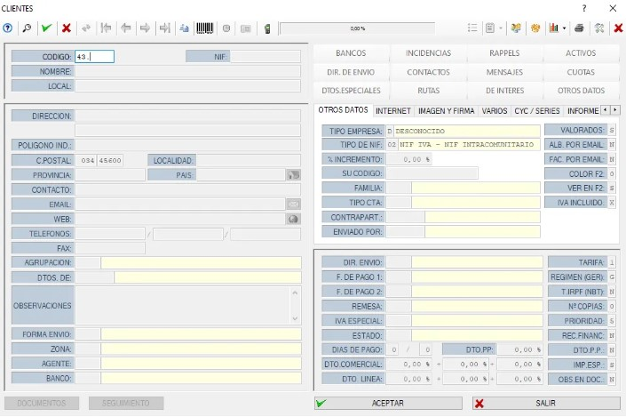

👥 Clientes y Proveedores
En el MAIS, los apartados de Clientes y Proveedores son muy similares y permiten gestionar todos los datos necesarios para su correcto funcionamiento.
👥 Clientes
Este apartado registra y gestiona todos los datos de tus clientes.
No es obligatorio rellenar todos los campos, pero los siguientes son necesarios para que el MAIS funcione correctamente:
✅ Campos obligatorios:
- 🆔 NIF
- 🧾 Nombre
- 📍 Local
- 🏠 Dirección
- 🔢 Código Postal
- 🏙️ Localidad
- 🗺️ Provincia
- 🌍 País
- ☎️ Contacto
✏️ Campos opcionales:
Resto de campos que pueden rellenarse según necesidades o preferencias de cada usuario. No son obligatorios.
🧾 Proveedores
La ventana de proveedores es muy similar a la de clientes, permitiendo gestionar la información de cada proveedor.
🔢 Código de proveedores
- Los códigos de clientes comienzan por 43.
- Los códigos de proveedores comienzan por 40.
⚙️ Funciones
Las funciones son prácticamente las mismas que en clientes. También se rellenan los datos necesarios para el registro y gestión.
🖼️ Añadir imagen
Es posible añadir una imagen del proveedor, lo que facilita su identificación visual en el listado completo.